.jpg)


Taylor Swift的同名首张专辑《Taylor Swift》发行于2006年10月24日。这张专辑标志着她作为乡村音乐歌手的正式出道，并迅速吸引了大量年轻听众的关注。斯威夫特当时只有16岁，专辑的内容主要反映了她在青少年时期的个人经历、感情生活以及成长的心路历程。
2007年，《Taylor Swift》在公告牌乡村乐专辑榜年终夺下季军，在公告牌二百强专辑榜排名第19；2008年，专辑凭借约204万的销量在公告牌二百强专辑榜排名第5；2008年，收录曲《Our Song》获得乡村音乐电视奖“年度女歌手歌曲MV”和“年度歌曲MV”奖项。
《Taylor Swift》专辑成功地奠定了泰勒·斯威夫特在乡村音乐界的基础，展示了她在创作上的天赋。它捕捉了青春的感情和梦想，引发了大量年轻听众的共鸣。正是这张专辑开启了她辉煌的音乐生涯，也为她日后逐渐迈向更广泛的流行音乐世界铺平了道路。


 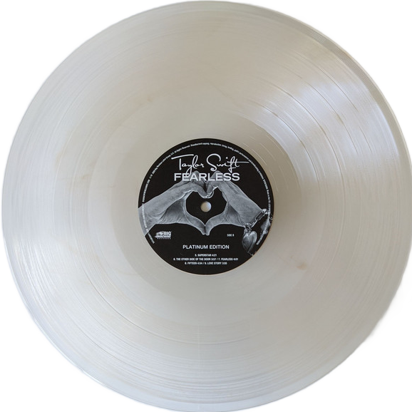
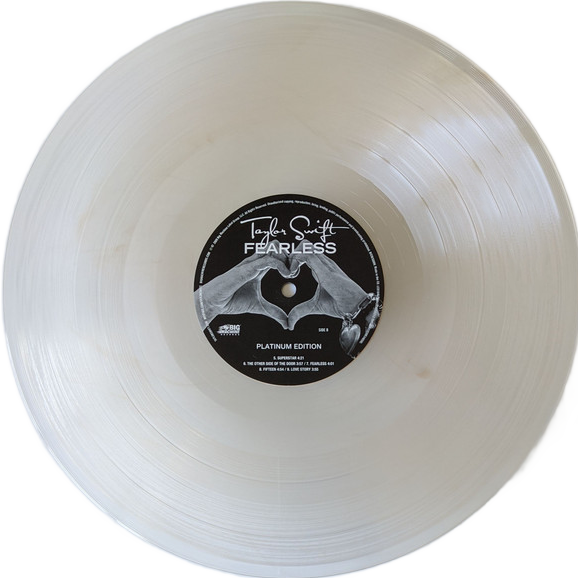
《Fearless》是泰勒·斯威夫特的第二张录音室专辑，由泰勒·斯威夫特和内森·查普曼制作。标准版唱片共收录13首歌曲，于2008年11月11日通过大机器唱片公司发行，白金庆功版唱片共收录19首歌曲，于2009年10月27日通过大机器唱片公司发行。
《Fearless》的全球销量突破1000万。2009年，据尼尔森销量系统统计，这张专辑在美国销量为660万张。2010年1月31日，《Fearless》荣获第52届格莱美奖的“年度最佳专辑”和“最佳乡村专辑”两座音乐大奖。《Love Story》里讲述了泰勒自己的情感故事，并结合莎士比亚的《罗密欧与朱丽叶》为歌曲增加故事戏剧性，凸显少女憧憬爱情的小心思。其次最受传唱的是《You Belong to Me》，在乡村的基础上融入了流行元素，朗朗上口的旋律加上极具感染力的少女心事，让人重拾对生活的勇气，正如专辑所表达的主题——勇敢去爱。


 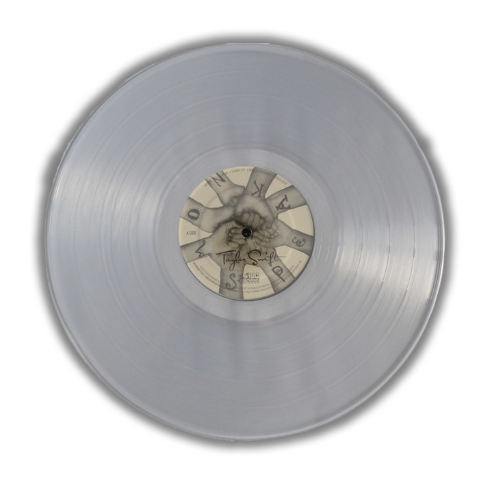
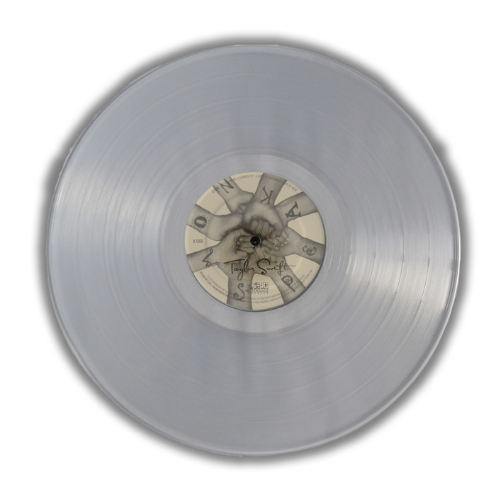
《Speak Now》是泰勒·斯威夫特发行的的第三张录音室专辑，标准版共收录14首歌曲，于2010年10月25日通过大机器唱片公司发行，专辑的音乐总监由泰勒·斯威夫特本人担任。
《Speak Now》凭借美国首周104.7万张的销量而登上公告牌二百强专辑榜冠军。与此同年，该专辑还陆续拿下加拿大、新西兰、澳大利亚和中国台湾的专辑销售榜冠军，全球销量超过580万张。2011年，《Speak Now》获第39届全美音乐奖“最受欢迎乡村专辑”和公告牌音乐奖“最佳乡村专辑”奖。
《Speak Now》被认为是泰勒·斯威夫特作为词曲创作人和音乐艺术家的重要作品。这张专辑不仅延续了她早期作品的叙事风格，还通过丰富的情感表达和音乐创作，进一步确立了她在流行与乡村音乐界的地位。专辑的成功不仅展示了她的个人才华，也为她的后续作品奠定了坚实的基础。
Taylor Swift的第四张录音室专辑《Red》于2012年10月22日发行。这张专辑标志着她从乡村音乐向流行音乐进一步转型，是她音乐生涯中一次关键性的跨越。
虽然《Red》依然包含一些乡村音乐元素，但它更多地向流行、摇滚、电子舞曲（EDM）靠拢，展现了泰勒在音乐风格上的多样化探索。专辑中有慢板的民谣风情，也有充满活力的流行摇滚，展现了她情感的复杂性。
专辑中许多歌曲，如“22”、“ Are Never Ever Getting Back Together”，已经成为流行文化的经典符号，不仅仅是在音乐上，还体现在年轻一代的生活方式和社交媒体中。尤其是《All Too Well》，因其感人的歌词和细腻的情感刻画，被广泛赞誉为斯威夫特最成熟、最深刻的作品之一。
《1989》于2014年10月27日发行。这张专辑标志着她从乡村音乐正式转型为流行音乐，是她音乐生涯中最具里程碑意义的作品之一。专辑的名字来自于泰勒·斯威夫特的出生年份（1989年），同时也是对1980年代流行音乐的致敬。与之前的专辑《Red》相比，《1989》完全抛弃了乡村元素，专注于充满80年代风格的合成器流行（synth-pop）。
专辑融合了1980年代的合成器流行、电子音乐、以及流行摇滚，充满了浓郁的怀旧感。全专辑节奏明快，旋律富有感染力，展现了斯威夫特的音乐转型和对流行音乐的新理解。
歌曲如“Shake It Off”、“Blank Space”以及“Bad Blood ”不仅在音乐榜单上取得了巨大成功，还成为了流行文化的重要符号，尤其是在社交媒体和音乐视频的影响力下，它们引发了广泛的讨论和模仿。


 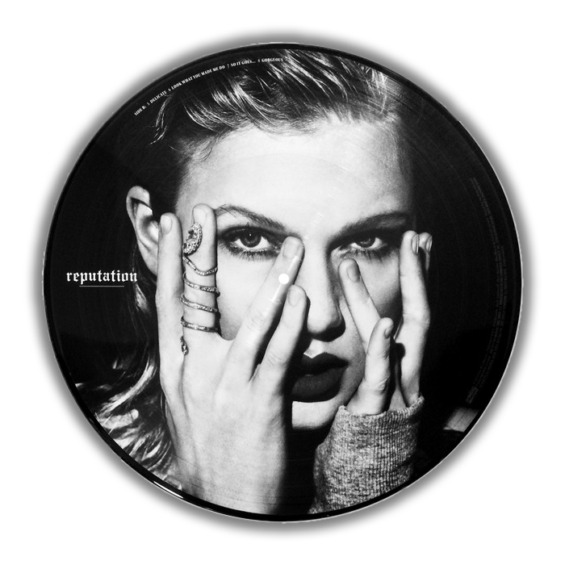
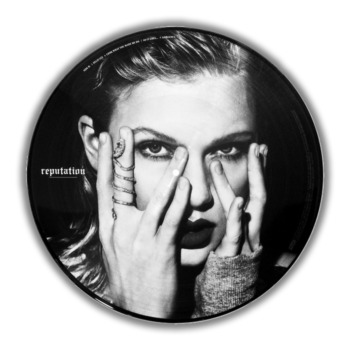
2016年7月，金·卡戴珊公开了泰勒·斯威夫特与其丈夫坎耶·维斯特的不实电话录音后，霎时泰勒·斯威夫特饱受非议。金·卡戴珊当时以一堆蛇的表情符号暗指泰勒蛇蝎心肠，引领了一大批人到泰勒·斯威夫特的社交账号下用蛇的表情留言讽刺她。泰勒·斯威夫特以“名望”（reputation）做为主题，想借此回应这几年的纷纷扰扰。
"Look What You Made Me Do"：专辑的首支单曲，歌词直接回应了外界对她的批评，暗示她“旧的泰勒已死”，开启了她形象的重塑。这首歌充满讽刺意味，是她对媒体攻击的反击。
《Reputation》是一张强烈个人化、充满情感对抗和自我反思的专辑。它展示了泰勒·斯威夫特在面对公众批评和个人困境时的坚韧与成长。专辑既是对她公众形象的重塑，也是她在音乐风格上的大胆探索。通过这张专辑，泰勒成功地重新定义了自己，从一个受欢迎的流行歌手，成长为更为复杂、成熟的音乐艺术家。
 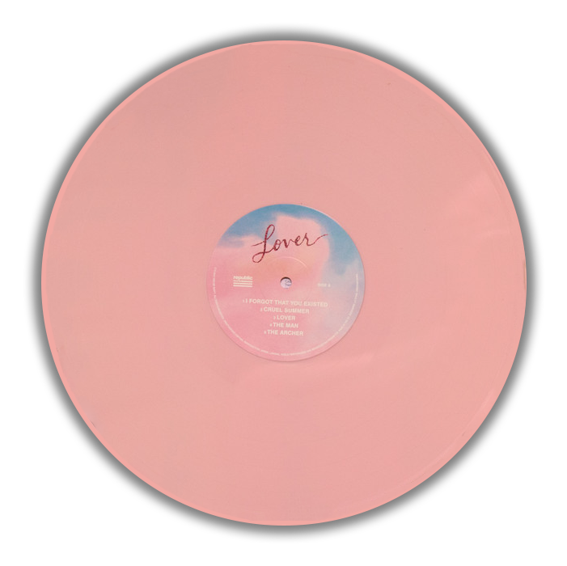
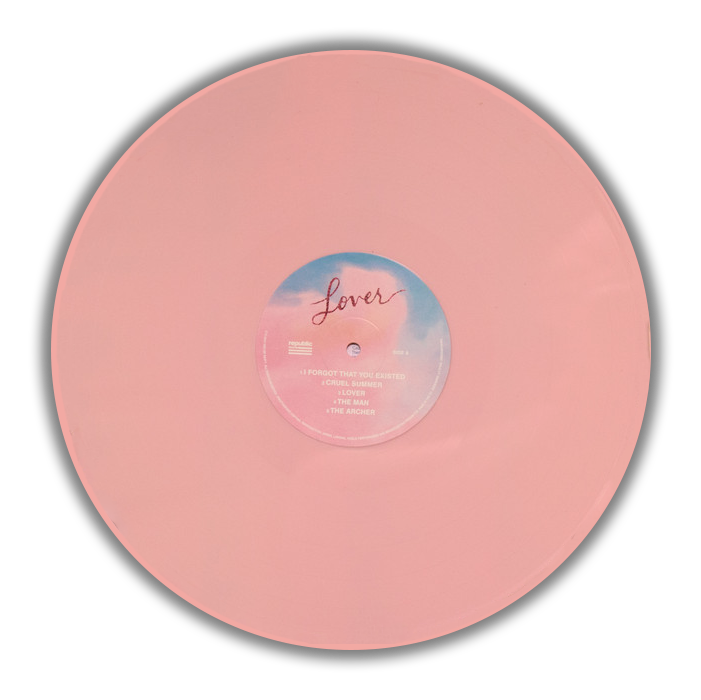
《Lover》于2019年8月23日发行。这张专辑与她前作《Reputation》形成了鲜明的对比，从黑暗、对抗的情绪回归到充满温暖和浪漫的氛围，展现了泰勒音乐创作的多样性和情感表达的柔和面。它以爱情为核心主题，探索了不同形式的爱情：浪漫的、复杂的、自爱的，以及对生活的热爱。
相比《Reputation》的黑暗电子风格,《Lover》更加明亮，充满了流行、合成器流行和独立音乐的元素。专辑展现了从80年代合成器流行到民谣和梦幻流行等多种音乐风格的交织。
《You Need to Calm Down》和《The Man》展现了泰勒·斯威夫特在社会议题上的发声。这张专辑不仅是对爱情的赞歌，也是她对女性赋权、LGBTQ+权利等话题的关注和支持。
通过《Lover》，泰勒不仅巩固了她在流行音乐界的地位，也展示了她作为词曲创作人和社会活动家的多维度形象。
.jpg) 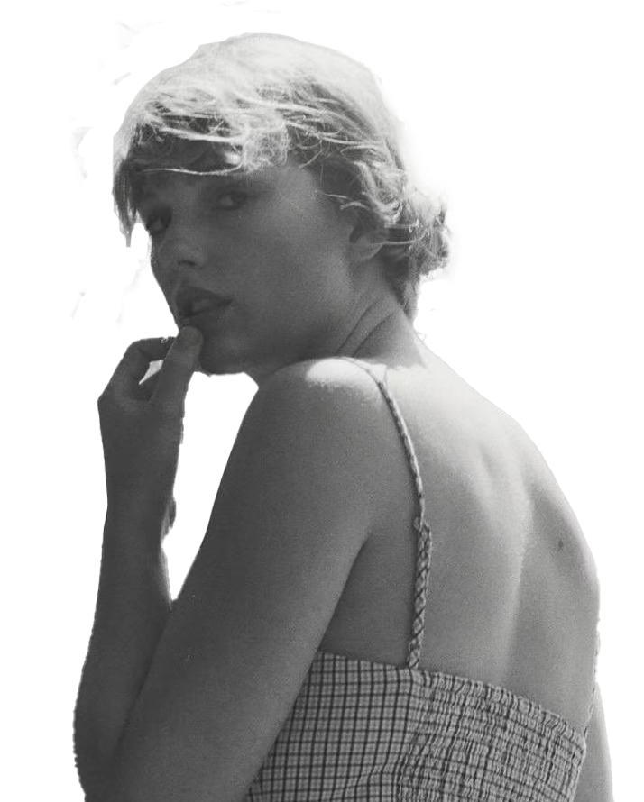
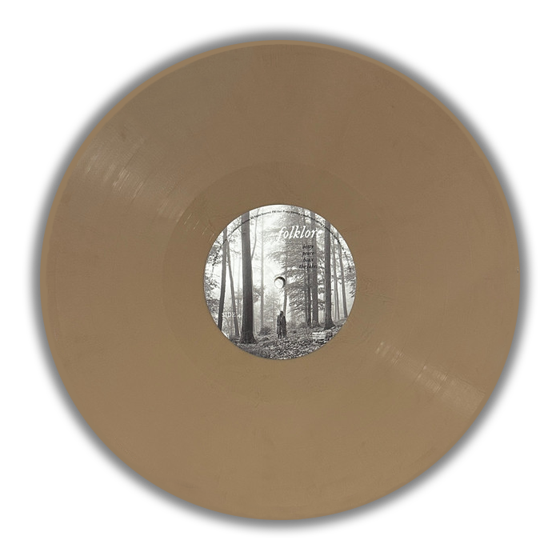
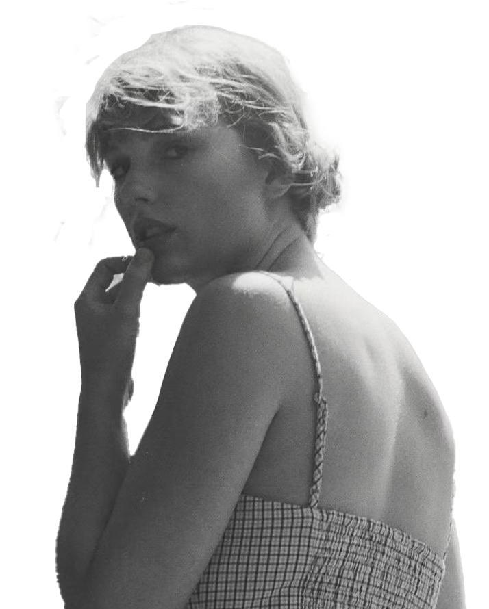
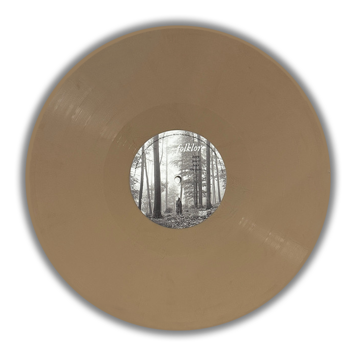
这张专辑是她在疫情期间的突然发布，也是她音乐风格的一次重大转变，融入了民谣、独立音乐、另类摇滚以及电子元素，展现了更为内敛、抒情且深思熟虑的音乐风格。《Folklore》因其梦幻的音色、诗意的歌词以及引人入胜的故事情节，广受好评，成为她职业生涯中的一座里程碑。
与之前的流行风格不同，《Folklore》以民谣和独立流行为基础，音乐风格更加宁静和朴素。Taylor Swift与制作人Aaron Dessner和长期合作的Jack Antonoff合作，编排上更加简约，注重钢琴、吉他和弦乐的使用，营造了一种朦胧且抒情的氛围。
相比她之前专注于个人情感体验的专辑，《Folklore》更像是一系列虚构故事的合集，融合了许多想象中的人物和情节。这些故事有时基于历史事件，有时是Taylor Swift的想象与创作。尽管如此，专辑中也有部分歌曲依然保留了她对个人生活的反思。
.jpg)

 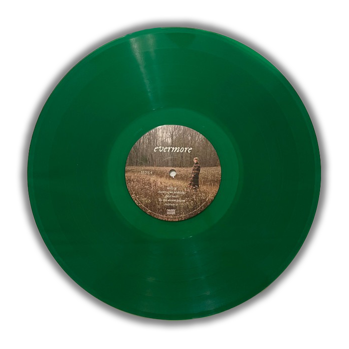
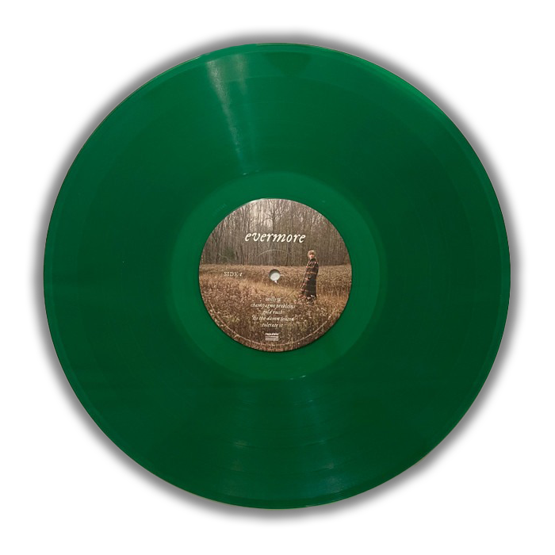
《Evermore》于2020年12月11日发布。这张专辑是《Folklore》的“姐妹篇”，延续了《Folklore》引入的民谣、独立流行和另类摇滚风格，进一步探索了泰勒·斯威夫特的叙事能力和情感深度。与前作相比，《Evermore》在编曲上更加多样化，包含了更多实验性的元素，如钢琴、吉他、和声和电子元素的结合。
乡村音乐在《Evermore》中占有更重要的地位，特别是像"No Body, No Crime"这样带有故事性的歌曲。而如"Gold Rush"和"Cowboy Like Me"等歌曲，则展现了更为多样的实验性音色。
《Evermore》比《Folklore》更加情感丰富，涵盖了从爱情、失落到复仇的广泛情感体验。专辑中的故事不再只是反思，而是充满了行动和情感上的变化，使得专辑在情感表达上更加立体。
.jpg) 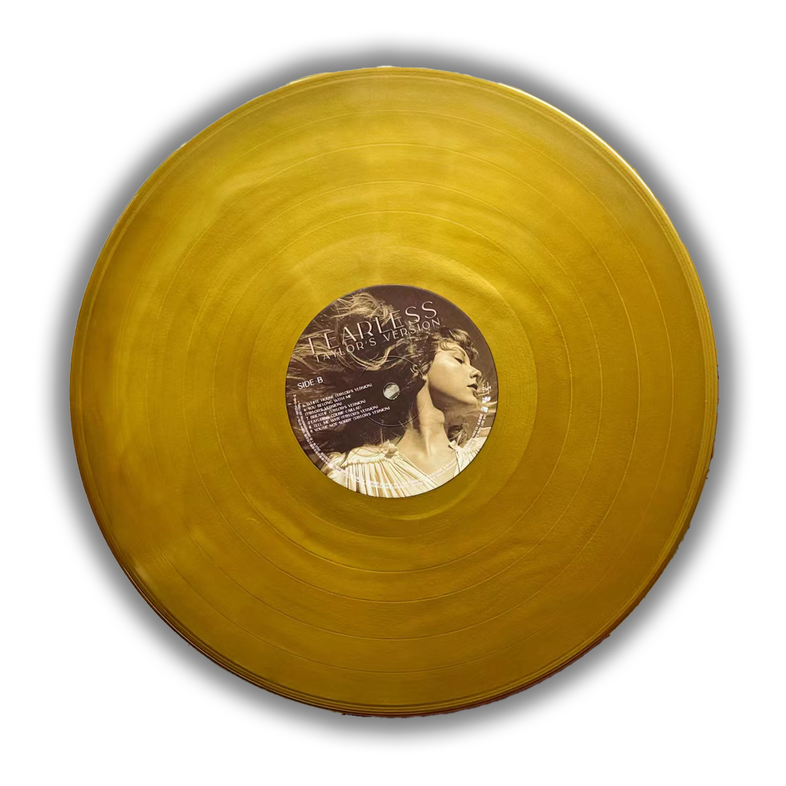
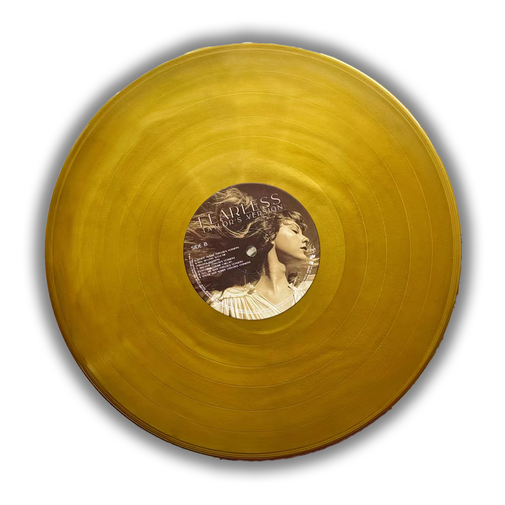
2019年，Taylor Swift与之前所属的唱片公司Big Machine陷入母带版权纠纷，由此她决定重新录制前六张专辑，以重掌对旧作的控制权，而打头阵的就是于2008 年发行的第二张创作专辑《FearlessI》。
《Fearless(Taylor's Version)》在最大程度保留旧版原貌的基础上，无论是专辑制作上的把控，还是Taylor Swift嗓音的表现力，都更具力量感。将同名曲《Fearlessl》提到专辑开篇，某种程度上体现了Taylor Swift抛开纷扰旧事，一往无前的无悔无惧。
班卓琴的演奏却轻易拨开了我们的怀旧思绪，大热单曲《Love Story》和《You Belong With Mel》,让关于青涩爱恋的回忆又一次变得清晰而鲜活。六首此前未公开过的作品被命名为"From The Vault"系列，其中《Mr. Perfectly Fine》极尽优美的旋律和Swift标志性的过门后副歌转调，将时光的指针悄悄拨回13年前。
《Red (Taylor’s Version)》是Taylor对2012年发行的第四张录音室专辑《Red》的重新录制版本，于2021年11月12日发布。这是泰勒为了重新获得她早期作品的主导权而进行的重新录制计划中的第二张专辑。
在《Red (Taylor’s Version)》中，她不仅重现了经典歌曲，还加入了未发布的歌曲和合作项目，Taylor将这些从原版《Red》录制时期未被收录的曲目称为“From The Vault”。
《Red (Taylor’s Version)》不仅仅是对泰勒·斯威夫特经典作品的回顾，它更是她作为艺术家、词曲创作人和女性力量的宣示。这张专辑通过情感丰富的歌曲展示了她对过去的重新审视和对未来的坚定掌控，同时也为歌迷提供了新老结合的音乐体验。通过这次重录，泰勒成功地让经典作品重获新生，同时也向她的听众展示了她的艺术成长与成熟。
.jpg)
 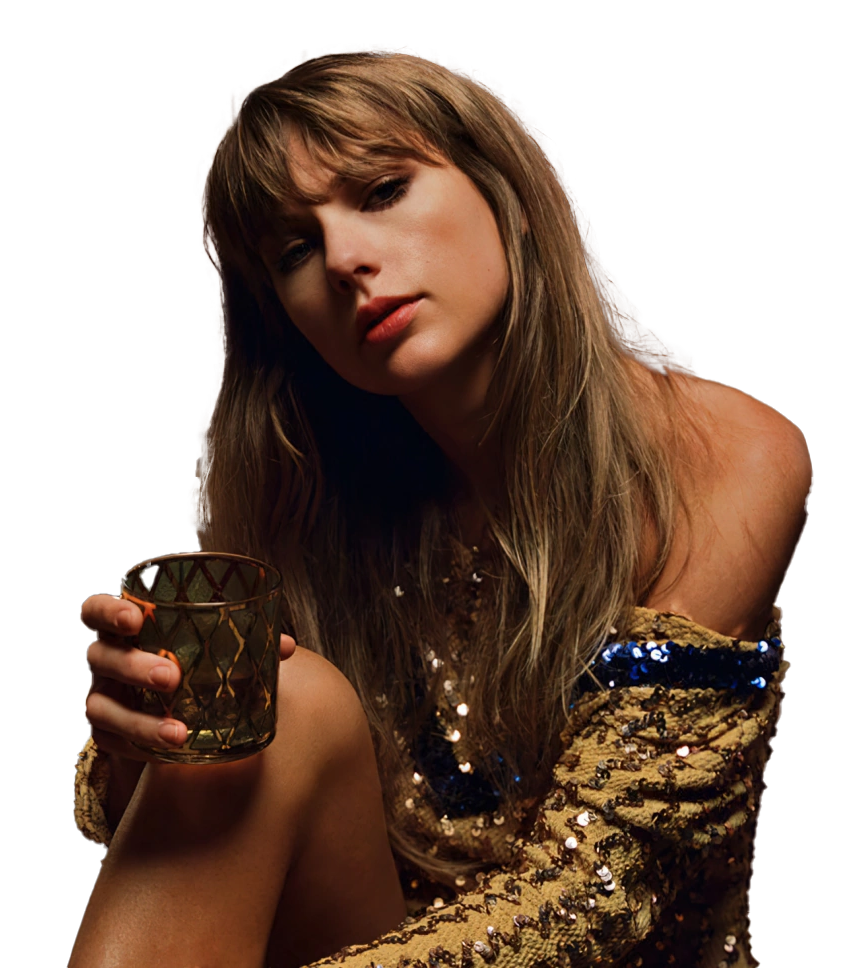
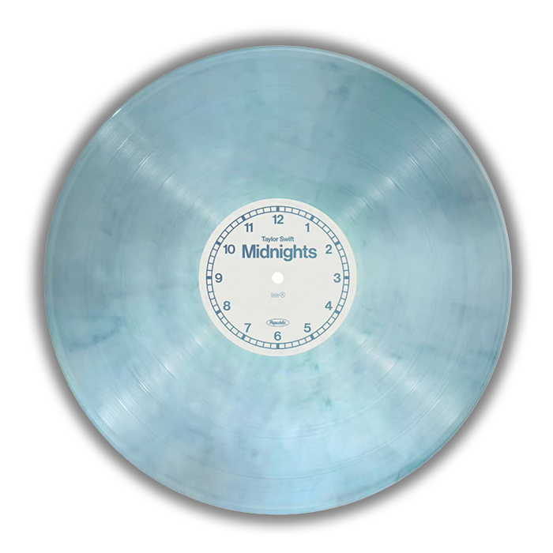
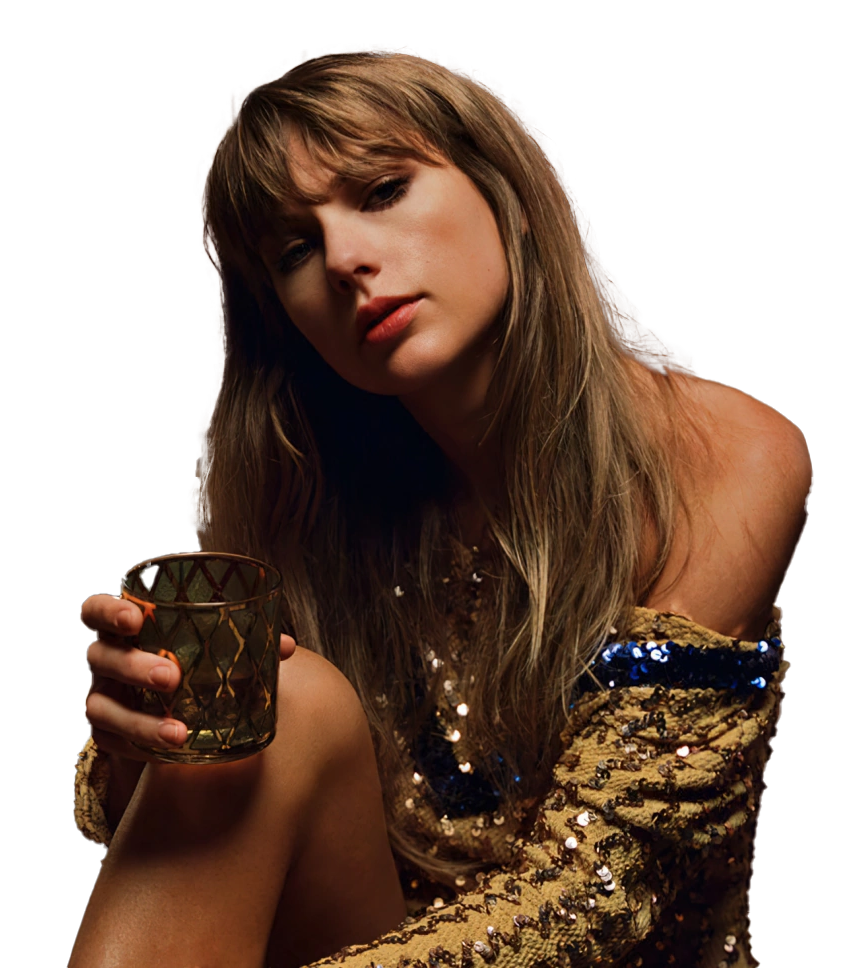
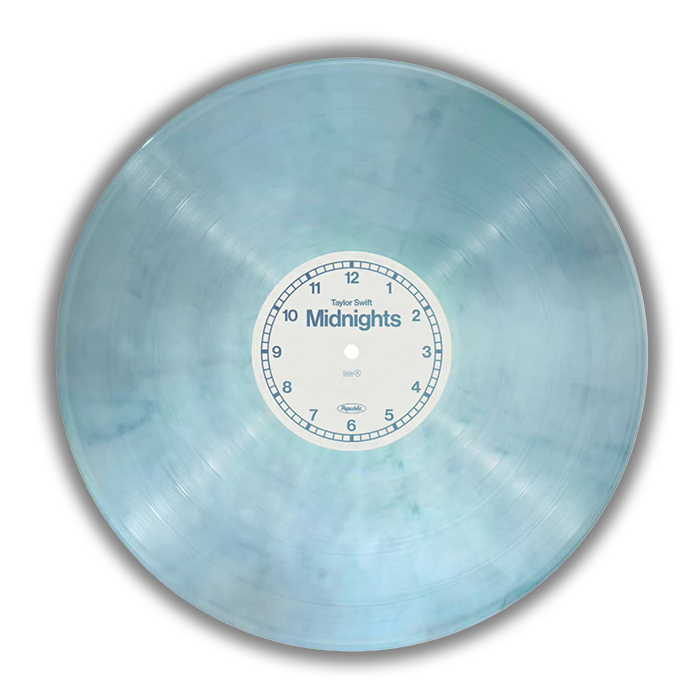
第十张录音室专辑《Midnights》于2022年10月21日发布。Taylor Swift将《Midnights》描述为“13个不眠之夜的故事”，这些歌曲捕捉了她人生中的重要时刻、焦虑、恐惧、爱情、失落与怀疑。让我们得以一览Taylor脑海中的缠斗(比如《Anti-Hero》自鄙与自恋的心态交错)， 或是了解到她稳定的情感关系。但即便Taylor目前的感情生活“风平浪静"，《Midnights》却并不缺少深度思考，尤其突出的是对女性角色的反思。
《Midnight Rain》是一首不到3分钟的小歌，却凝练了女性强悍自主的特质，呼应了《You're On Your Own, Kid》对女性追逐梦想的号召。而《Midnight Rain》对女性角色期望的挑战，在《Karmal》《Mastermind》构建的形象里进一步具体化。
.jpg) 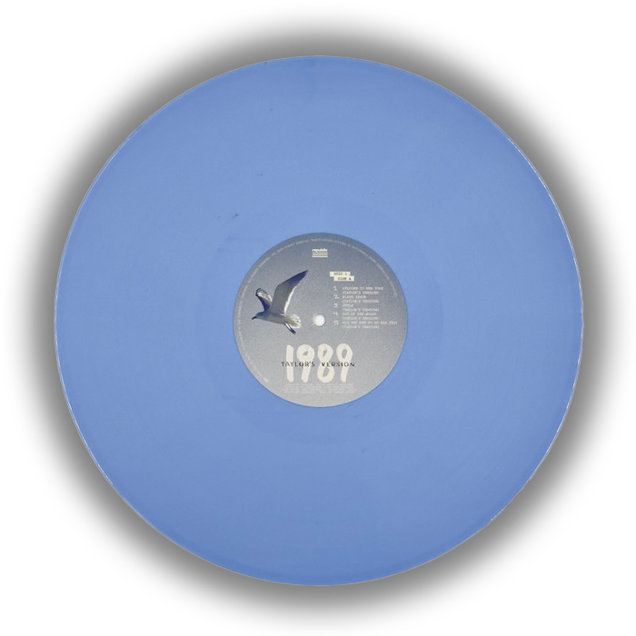
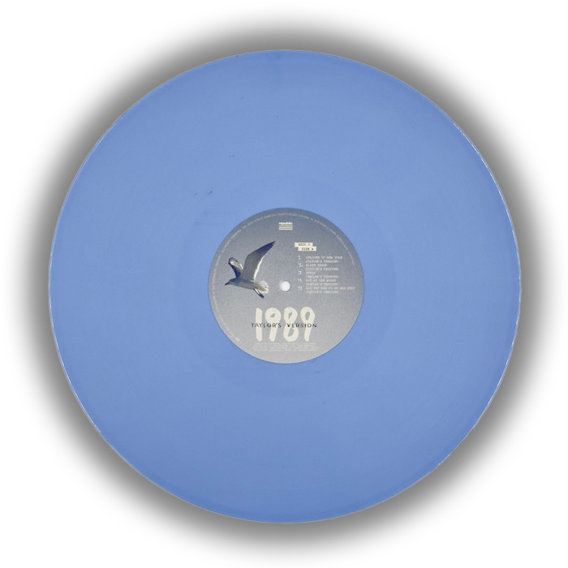
《1989》不只埋藏着Swift转型的野心。 如果说《Speak Now》和2008年的《Fearless》内含莎翁戏剧般的张力，那么《1989》的Swift就是张扬的、自信的， 她大口呼吸着自由的空气(《Style》), 也尽情狂想(《Wildest Dreams》),年轻时的她还做不到如此从容。《Welcome to New York》是鎏金的欲望叙事，她决心在这座潜藏无尽可能性的城市里让自己重获生机--"The lights are so bright/But they never blind me,me"。Swift借这首歌向大家宣布，她至少目前要挥别纳什维尔和乡村乐，也脱离了它们为她的形象和风格带来的桎梏。Swift迈步的姿态昂首挺胸--《Shake It Off》里的她对过去的恩怨一笑置之，心态成熟而自在；甚至在《Blank Spacel》里，她调侃起自己来了， 要知道这几乎曾是个"不可说"的话题啊。
.jpg) 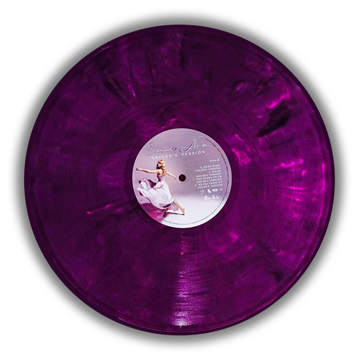
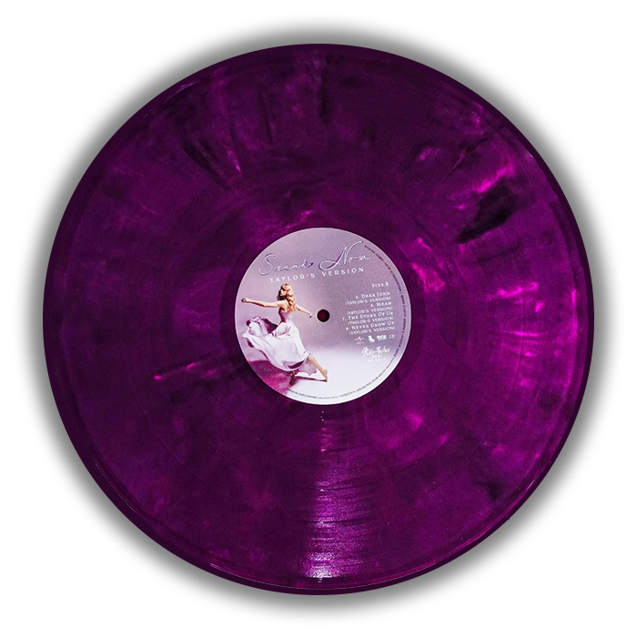
"你知道，现实生活总是很有意思的。" Taylor Swift在2010年专辑《Speak Now》的唱片内页里写道。《Speak Now》是她的第三张专辑，也是她多年后为了收回母带所有权而选择重录的第三部作品。"有时候你得保持沉默，有时候你得等待机会。但如果你已经明白自己的感受、清楚地知道自己需要表达什么，你肯定能感觉到时机的来临。"
这一次录制新版专辑时，Swift选择忠于原版专辑，也忠于年轻时的自己。虽然她将新版专辑的制作人从纳什维尔的Nathan Chapman换成了近期经常合作的Jack Antonoff和Aaron Dessner，但编曲继承了温暖清澈的风格， 而且比原版更加质朴，亦兼具她日后杂糅多元曲风的流行视野。如今，我们都知道2012年的《Red》对Swift来说意味着什么，但回顾《Speak Now》的歌曲，我们其实已经可以预见她日后的发展。
 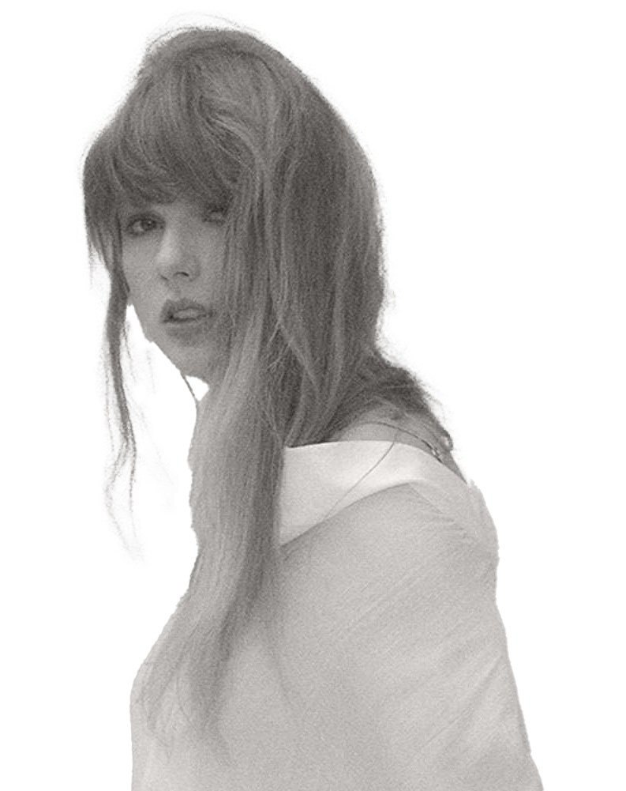
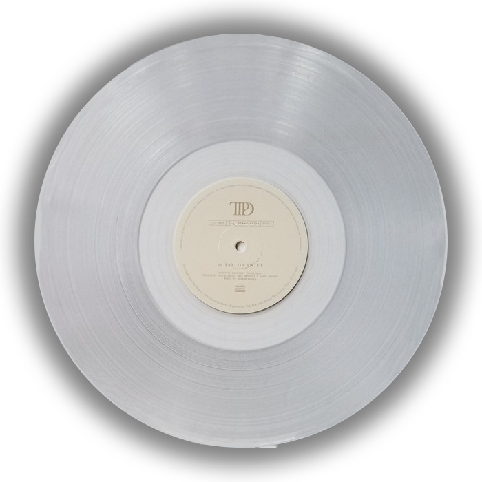
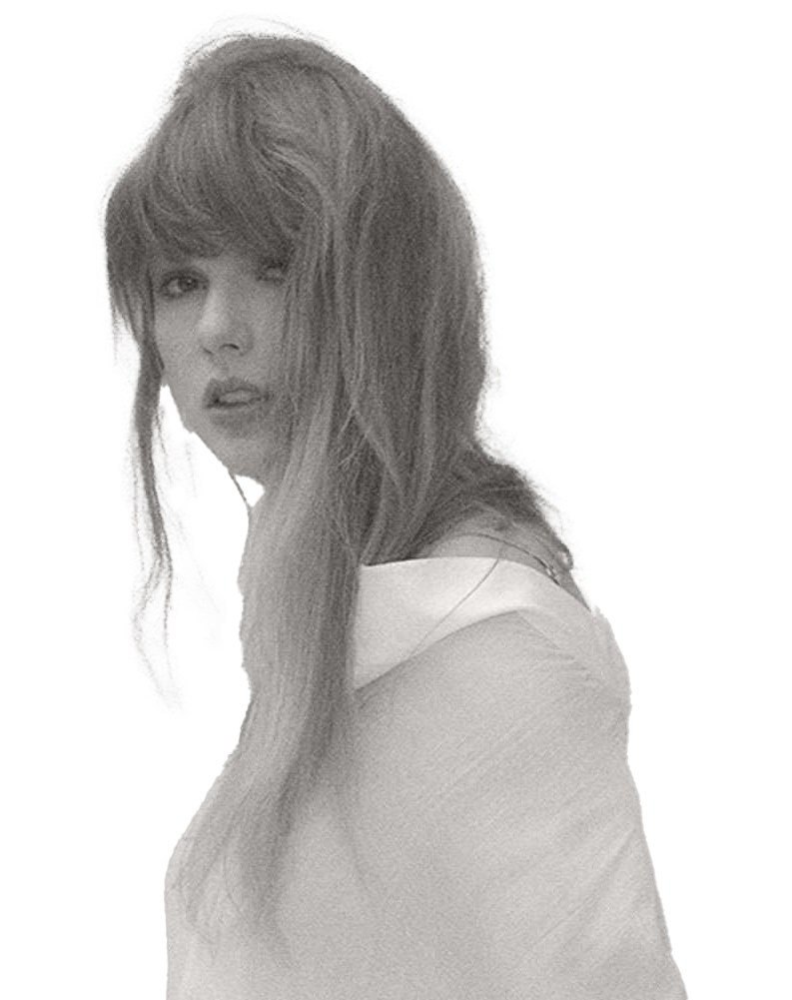
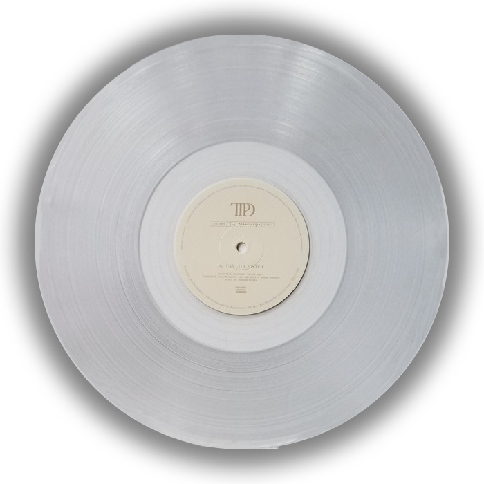
《THE TORTURED POETS DEPARTMENT》延续了Taylor一贯的音乐风格，融合了流行、摇滚等多种元素，和她独特的嗓音共同构筑了更加丰富的层次与听感，展现了她在音乐创作上的无限魅力。
在歌曲《Fortnight》中，舒缓的电子打击乐旋律响起，思绪也随之一起飘向神圣庄严的地带；Taylor空灵又富有磁性的嗓音将一段浪漫却遗憾的爱情故事娓娓道来，仿佛漫步在黄昏时刻的日落大道。专辑同名曲《The Tortured Poets Department》将复古流行的民谣旋律融入轻摇滚，续写着冷色调但又饱含温度的自白诗；慵懒唱腔下的情绪随多变的旋律宣泄，不断重复的呢喃抒发着对生命的叩问。《So Long, London》密集的鼓点与涌动的电子音效相交织，刻画出心脏舒张般的生命律动；多人声部的叠加在弦乐的衬托下更具朦胧感,让听众仿佛置身光影斑斓的无人之地